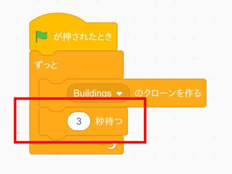

ゲームバランスを調整する
だいぶゲームらしくなってきましたので、この辺りでスプライトの大きさや位置、変数の値を変えてゲームバランスを調整してみましょう。
恐竜やトラップが大きすぎてすぐぶつかったり、逆に小さすぎて簡単すぎたりする時はスプライトの大きさや位置を変えてみましょう。

恐竜のコード画面を開き、変数「重力加速度」と「ジャンプ速度」を変更すると落下速度やジャンプの高さを調整できます。

トラップのコード画面を開き、変数「トラップの速さ」を変更するとトラップが移動する速さを調整できます。
またトラップのコスチューム画面を開いて、背の高いコスチュームや幅の広いコスチュームを削除すると難易度が下がります。
トラップのコスチュームの数を減らしたらコード画面を開いて、「1から〜までの乱数を繰り返す」ブロックの数値をコスチュームの数に合わせて下さい。
また背景のコード画面を開いて、「3秒待つ」ブロックの数値を変えるとトラップが現れるタイミングを変えれます。
